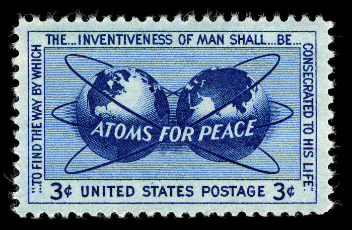

Mukund
Kunapareddy
Management Information Systems
San José State University
I'm building a pipeline between Silicon Valley technology and Washington's most pressing national security challenges. Peace follows deterrence.
Interested in strategy, the American industrial base, and where software meets hard problems. On the side, I play golf.
- Emailmkunapareddy@gmail.com
- X@mukundlk
- LinkedInin/mukundlk
- GitHubMukund2
- Alex Karp at the American Dynamism Summita16z
- In Defense of Defense TechStanford Review
- Simulacra and SimulationJean Baudrillard
- The Singularity Is NearRay Kurzweil
-
01
Dual-Use Tech Bridge
2026An AI platform that surfaces non-obvious connections between public U.S. military technology and commercial applications. Ingested ~120,000 technologies from federal open-data sources, then built an inference layer that finds transfers no one had made yet.
Read the case → -
02
Memi
2026An AI-native CRM built around SMS. The future of the interface is meeting people where they already are — not another dashboard that taxes your attention. Started at a frat rush event, when I realized I'd forget everyone I just met.
Private beta -
03
Theron
2026A local proxy that intercepts and analyzes every autonomous-agent request for prompt injection and anomalous behavior. Built the week after OpenClaw shipped, when the security surface of agentic AI became impossible to ignore. Sub-100ms latency, zero config.
View on GitHub →